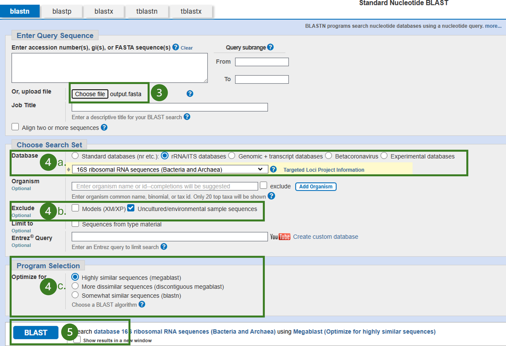

Chapitre 4 Script pour BLAST
4.1 Filtrer les données
Maintenant que vous vous êtes familiarisés avec les différentes commandes R et l’interface de RStudio, vous êtes maintenant prêtes et prêts à utiliser R pour obtenir les séquences d’ADN de vos inconnus. Ces dernières ont été compilées dans un seul fichier en format CSV (inconnus_equipe.csv) pour l’ensemble des étudiants de la classe. Vous devez donc utiliser des filtres afin d’extraire uniquement vos données. La première étape consiste à importer le fichier inconnus_equipe.csv dans R avec la commande suivante :
Code
La prochaine étape consiste à filtrer les colonnes appropriées du tableau de données afin d’extraire vos données. Pour ce faire, n’hésitez pas à consulter les exemples de la section précédente (Exploration de données), rechercher sur internet, ou demander à vos démos.
Pour afficher les solutions possibles, cliquer sur ” ▶ Code ” ci-dessous.
Code
Si tout fonctionne, vous devriez maintenant voir un second objet df_sub comportant 3 lignes et 7 colonnes.
Nous allons maintenant enregistrer sous format fasta le tableau de données filtré afin de pouvoir le téléverser vers l’outil BLAST du NCBI.
4.2 Utiliser BLAST
Rendez-vous sur l’outil en ligne BLAST du NCBI
Choisir l’analyse
Nucleotide BLAST(BLASTn)Sélectionner
Choose fileet sélectionner le fichier produit (output.fasta)Modifier les paramètres de la recherche BLAST
- Utiliser la collection de nucléotides (Database rRNA/ITS database)
- Exclure les organismes environnementaux et non cultivés(Exclude Uncultured/environmental sample sequences)
- Choisir l’algorithme de BLAST désiré (essayer à la fois les algorithmes
BLASTnetMegaBLAST
- Choisir l’algorithme de BLAST désiré (essayer à la fois les algorithmes
Lancer l’analyse (bouton
BLAST).

Exemple de résultat :
Pour voir les résultats de vos autres inconnus utiliser le menu déroulant sous l’encadré Results for

- Pour votre rapport, vous devez inclure un imprime-écran incluant les trois premiers résultats de l’analyse (trois premiers taxons identifiés) pour chacun de vos inconnus. Vous devez inclure cette image dans l’annexe de votre travail et pour le corps du texte produire un tableau comprenant les colonnes suivantes :
- Per. Ident.
- La proportion de nucléotides identiques entre votre séquence et la séquence trouvée dans la base de données, dans la région alignée
- Query cover
- Le pourcentage de votre séquence inconnue qui a été aligné avec la séquence de la base de données
- E.value
- Estime le nombre de résultats similaires que l’on pourrait obtenir par hasard
Vous pouvez aussi consulter pour votre plaisir personnel :
- L’arbre phylogénétique (Distance tree of results)
- Les résultats de l’alignement (MSA viewer)